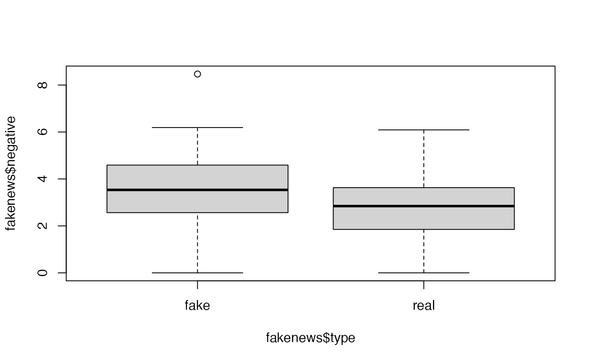

Software for Bayesian Statistical Analysis
So far, simple Bayesian models with conjugate priors have been considered. As explained in previous practicals, when the posterior distribution is not available in closed form, MCMC algorithms such as the Metropolis-Hastings or Gibbs Sampling can be used to obtain samples from it.
In general, posterior distributions are seldom available in closed form and implementing MCMC algorithms for complex models can be technically difficult and very time-consuming.
For this reason, in this Practical we start by looking at a number of
R packages to fit Bayesian statistical models. These
packages will equip us with tools which can be used to deal with more
complex models efficiently, without us having to do a lot of extra
coding ourselves. Fitting Bayesian models in R will then be
much like fitting non-Bayesian models, using model-fitting functions at
the command line, and using standard syntax for model specification.
BayesX and INLA
In particular, the following two software packages will be considered:
BayesXINLA
BayesX (http://www.bayesx.org/) implements MCMC methods to
obtain samples from the joint posterior and is conveniently accessed
from R via the package R2BayesX.
INLA (https://www.r-inla.org/) is based on producing
(accurate) approximations to the marginal posterior distributions of the
model parameters. Although this can be enough most of the time, making
multivariate inference with INLA can be difficult or
impossible. However, in many cases this is not needed and
INLA can fit some classes of models in a fraction of the
time it takes with MCMC.
Both R2BayesX and INLA have a very simple
interface to define models using a formula (in the same way
as with glm() and gam() functions).
While R2BayesX can be installed from CRAN,
INLA is not on CRAN and needs to be installed from a
specific repository.
Other Bayesian Software
- Package
MCMCpackin R contains functions such asMCMClogit(),MCMCPoisson()andMCMCprobit()for fitting specific kinds of models. - A classic MCMC program is
BUGS, (Bayesian Analysis using Gibbs Sampling) described in Lunn et al. (2000): http://www.mrc-bsu.cam.ac.uk/bugs/winbugs/contents.shtml. BUGS can be used through graphical interfacesWinBUGSandOpenBUGS. Both of these packages can be called from within R using packagesR2WinBUGSandR2OpenBUGS. -
JAGS, which stands for “just another Gibbs sampler”. Can also be called from R using packager2jags. - The
NIMBLEpackage extendsBUGSand implements MCMC and other methods for Bayesian inference. You can get it from https://r-nimble.org, and is best run directly from R. - The
Stansoftware implements Hamiltonian Monte Carlo and other methods for fit hierarchical Bayesian models. It is available from https://mc-stan.org.
Bayesian Logistic Regression
Model Formulation
To summarise the model formulation presented in the lecture, given a response variable \(Y_i\) representing the count of a number of successes from a given number of trials \(n\) with success probabliity \(\theta_i\), we have
- \((Y_i \mid \boldsymbol \theta_i) \sim\mbox{Bi}(n, \theta_i),\,\, i.i.d.\,\,, i=1, \ldots, n\) \[\begin{align*} \mbox{logit}(\theta_i) & =\eta_i \nonumber\\ \eta_{i} & =\beta_0+\beta_1 x_{i1}+\ldots+\beta_p x_{ip}=\boldsymbol x_i\boldsymbol \beta\nonumber \end{align*}\] assuming the logit link function and with linear predictor \(\eta_{i}\).
Example: Fake News
The fake_news data set in the bayesrules
package in R contains information about 150 news articles,
some real news and some fake news.
In this example, we will look at trying to predict whether an article of news is fake or not given three explanatory variables.
We can use the following code to extract the variables we want from the data set:
library(bayesrules)
fakenews <- fake_news[,c("type","title_has_excl","title_words","negative")]The response variable type takes values
fake or real, which should be
self-explanatory. The three explanatory variables are:
title_has_excl, whether or not the article contains an excalamation mark (valuesTRUEorFALSE);title_words, the number of words in the title (a positive integer); andnegative, a sentiment rating, recorded on a continuous scale.
In the exercise to follow, we will examine whether the chance of an article being fake news is related to the three covariates here.
Fitting Bayesian Logistic Regression Models in BayesX
BayesX makes inference via MCMC, via the
R2BayesX package which as noted maked the syntax for model
fitting very similar to that for fitting non-Bayesian models using
glm() in R.
The package must be loaded into R:
library(R2BayesX)
#> Loading required package: BayesXsrc
#> Loading required package: colorspace
#> Loading required package: mgcv
#> Loading required package: nlme
#> This is mgcv 1.8-42. For overview type 'help("mgcv-package")'.The syntax for fitting a Bayesian Logistic Regression Model with one response variable and three explanatory variables will be like so:
model1 <- bayesx(formula = y ~ x1 + x2 + x3,
data = data.set,
family = "binomial")Note that the variable title_has_excl will need to be
either replaced by or converted to a factor, for example
fakenews$titlehasexcl <- as.factor(fakenews$title_has_excl)Functions summary and confint produce a
summary (including parameter estimates etc) and confidence intervals for
the parameters, respectively.
In order to be able to obtain output plots from BayesX, it seems that we need to create a new version of the response variable of type logical:
fakenews$typeFAKE <- fakenews$type == "fake"Exercises
-
Perform an exploratory assessment of the fake news data set, in particular looking at the possible relationships between the explanatory variables and the fake/real response variable
typeFAKE.Solution
# Is there a link between the fakeness and whether the title has an exclamation mark? table(fakenews$title_has_excl, fakenews$typeFAKE) #> #> FALSE TRUE #> FALSE 88 44 #> TRUE 2 16 # For the quantitative variables, look at boxplots on fake vs real boxplot(fakenews$title_words ~ fakenews$typeFAKE)
boxplot(fakenews$negative ~ fakenews$typeFAKE)
-
Fit a Bayesian model in BayesX using the fake news
typeFAKEvariable as response and the others as covariates. Examine the output; does the model fit well, and is there any evidence that any of the explanatory variables are associated with changes in probability of an article being fake or not?Solution
# Produce the BayesX output bayesx.output <- bayesx(formula = typeFAKE ~ titlehasexcl + title_words + negative, data = fakenews, family = "binomial", method = "MCMC", iter = 15000, burnin = 5000) summary(bayesx.output) #> Call: #> bayesx(formula = typeFAKE ~ titlehasexcl + title_words + negative, #> data = fakenews, family = "binomial", method = "MCMC", iter = 15000, #> burnin = 5000) #> #> Fixed effects estimation results: #> #> Parametric coefficients: #> Mean Sd 2.5% 50% 97.5% #> (Intercept) -3.0041 0.7741 -4.5222 -2.9957 -1.5304 #> titlehasexclTRUE 2.6798 0.8283 1.2422 2.6023 4.5465 #> title_words 0.1152 0.0581 0.0031 0.1136 0.2325 #> negative 0.3294 0.1541 0.0253 0.3248 0.6354 #> #> N = 150 burnin = 5000 method = MCMC family = binomial #> iterations = 15000 step = 10 confint(bayesx.output) #> 2.5% 97.5% #> (Intercept) -4.520060000 -1.5423965 #> titlehasexclTRUE 1.245669000 4.5090407 #> title_words 0.003732297 0.2308962 #> negative 0.028069778 0.6347291 -
Produce plots of the MCMC sample traces and the estimated posterior distributions for the model parameters. Does it seem like convergence has been achieved?
Solution
# An overall plot of sample traces and density estimates # plot(samples(bayesx.output)) # Traces can be obtained separately plot(bayesx.output,which = "coef-samples")# And the density plots one-by-one par(mfrow=c(2,2)) plot(density(samples(bayesx.output)[,"titlehasexclTRUE"]),main="Title Has Excl") plot(density(samples(bayesx.output)[,"title_words"]),main="Title Words") plot(density(samples(bayesx.output)[,"negative"]),main="Negative")
-
Fit a non-Bayesian model using
glm()for comparison. How do the model fits compare?Solution
# Fit model - note similarity with bayesx syntax glm.output <- glm(formula = typeFAKE ~ titlehasexcl + title_words + negative, data = fakenews, family = "binomial") # Summarise output summary(glm.output) #> #> Call: #> glm(formula = typeFAKE ~ titlehasexcl + title_words + negative, #> family = "binomial", data = fakenews) #> #> Deviance Residuals: #> Min 1Q Median 3Q Max #> -2.6169 -0.8659 -0.6566 1.1050 2.2124 #> #> Coefficients: #> Estimate Std. Error z value Pr(>|z|) #> (Intercept) -2.91516 0.76096 -3.831 0.000128 *** #> titlehasexclTRUE 2.44156 0.79103 3.087 0.002025 ** #> title_words 0.11164 0.05801 1.925 0.054278 . #> negative 0.31527 0.15371 2.051 0.040266 * #> --- #> Signif. codes: 0 '***' 0.001 '**' 0.01 '*' 0.05 '.' 0.1 ' ' 1 #> #> (Dispersion parameter for binomial family taken to be 1) #> #> Null deviance: 201.90 on 149 degrees of freedom #> Residual deviance: 169.36 on 146 degrees of freedom #> AIC: 177.36 #> #> Number of Fisher Scoring iterations: 4 # Perform ANOVA on each variable in turn drop1(glm.output,test="Chisq") #> Single term deletions #> #> Model: #> typeFAKE ~ titlehasexcl + title_words + negative #> Df Deviance AIC LRT Pr(>Chi) #> <none> 169.36 177.36 #> titlehasexcl 1 183.51 189.51 14.1519 0.0001686 *** #> title_words 1 173.17 179.17 3.8099 0.0509518 . #> negative 1 173.79 179.79 4.4298 0.0353162 * #> --- #> Signif. codes: 0 '***' 0.001 '**' 0.01 '*' 0.05 '.' 0.1 ' ' 1
Bayesian Poisson Regression
Model Formulation
To summarise the model formulation presented in the lecture, given a response variable \(Y_i\) representing the counts occurring from a process with mean parameter \(\lambda_i\):
- \((Y_i \mid \boldsymbol \lambda_i) \sim\mbox{Po}(\lambda_i),\,\, i.i.d.\,\,, i=1, \ldots, n\) \[\begin{align*} \mbox{log}(\lambda_i) & =\eta_i \nonumber\\ \eta_{i} & =\beta_0+\beta_1 x_{i1}+\ldots+\beta_p x_{ip}=\boldsymbol x_i\boldsymbol \beta\nonumber \end{align*}\] assuming the log link function and with linear predictor \(\eta_{i}\).
Example: Emergency Room Complaints
For this example we will use the esdcomp dataset, which
is available in the faraway package. This dataset records
complaints about emergency room doctors. In particular, data was
recorded on 44 doctors working in an emergency service at a hospital to
study the factors affecting the number of complaints received.
The response variable that we will use is complaints, an
integer count of the number of complaints received. It is expected that
the number of complaints will scale by the number of visits (contained
in the visits column), so we are modelling the rate of
complaints per visit - thus we will need to include a new variable
log.visits as an offset.
The three explanatory variables we will use in the analysis are:
residency, whether or not the doctor is still in residency training (valuesNorY);gender, the gender of the doctor (valuesForM); andrevenue, dollars per hour earned by the doctor, recorded as an integer.
Our simple aim here is to assess whether the seniority, gender or income of the doctor is linked with the rate of complaints against that doctor.
We can use the following code to extract the data we want without having to load the whole package:
esdcomp <- faraway::esdcomp Fitting Bayesian Poisson Regression Models in BayesX
Again we use BayesX to fit this form of Bayesian
generalised linear model.
If not loaded already, the package must be loaded into R:
The syntax for fitting a Bayesian Poisson Regression Model with one response variable, three explanatory variables and an offset will be like so:
However, as noted above we need to include an offset in this
analysis; since for a Poisson GLM we will be using a log() link function
by default, we must compute the log of the number of visits and include
that in the data set esdcomp:
esdcomp$log.visits <- log(esdcomp$visits) The offset term in the model is then written
offset(log.visits)
in the call to bayesx.
Exercises
-
Perform an exploratory assessment of the emergency room complaints data set, particularly how the response variable
complaintsvaries with the proposed explanatory variables relative to the number of visits. To do this, create another variable which is the ratio ofcomplaintstovisits. -
Fit a Bayesian model in BayesX using the
complaintsvariable as Poisson response and the others as covariates. Examine the output; does the model fit well, and is there any evidence that any of the explanatory variables are associated with the rate of complaints?Solution
# Fit model - note similarity with bayesx syntax esdcomp$log.visits <- log(esdcomp$visits) bayesx.output <- bayesx(formula = complaints ~ offset(log.visits) + residency + gender + revenue, data = esdcomp, family = "poisson") # Summarise output summary(bayesx.output) #> Call: #> bayesx(formula = complaints ~ offset(log.visits) + residency + #> gender + revenue, data = esdcomp, family = "poisson") #> #> Fixed effects estimation results: #> #> Parametric coefficients: #> Mean Sd 2.5% 50% 97.5% #> (Intercept) -0.3636 0.6875 -1.6632 -0.3545 0.9731 #> residencyY -0.5461 0.1898 -0.9140 -0.5497 -0.1680 #> genderM 0.1617 0.2212 -0.2708 0.1631 0.6006 #> revenue 0.0063 0.0028 0.0011 0.0063 0.0114 #> #> N = 44 burnin = 2000 method = MCMC family = poisson #> iterations = 12000 step = 10 -
Produce plots of the MCMC sample traces and the estimated posterior distributions for the model parameters. Does it seem like convergence has been achieved?
Solution
# An overall plot of sample traces and density estimates # plot(samples(bayesx.output)) # Traces can be obtained separately plot(bayesx.output,which = "coef-samples") -
Fit a non-Bayesian model using
glm()for comparison. How do the model fits compare?Solution
# Fit model - note similarity with bayesx syntax esdcomp$log.visits <- log(esdcomp$visits) glm.output <- glm(formula = complaints ~ offset(log.visits) + residency + gender + revenue, data = esdcomp, family = "poisson") # Summarise output summary(glm.output) #> #> Call: #> glm(formula = complaints ~ offset(log.visits) + residency + gender + #> revenue, family = "poisson", data = esdcomp) #> #> Deviance Residuals: #> Min 1Q Median 3Q Max #> -2.3356 -0.9403 -0.4460 0.8726 2.0306 #> #> Coefficients: #> Estimate Std. Error z value Pr(>|z|) #> (Intercept) -7.157087 0.688148 -10.401 <2e-16 *** #> residencyY -0.350610 0.191077 -1.835 0.0665 . #> genderM 0.128995 0.214323 0.602 0.5473 #> revenue 0.002362 0.002798 0.844 0.3986 #> --- #> Signif. codes: 0 '***' 0.001 '**' 0.01 '*' 0.05 '.' 0.1 ' ' 1 #> #> (Dispersion parameter for poisson family taken to be 1) #> #> Null deviance: 63.435 on 43 degrees of freedom #> Residual deviance: 58.698 on 40 degrees of freedom #> AIC: 189.48 #> #> Number of Fisher Scoring iterations: 5 # Perform ANOVA on each variable in turn drop1(glm.output, test = "Chisq") #> Single term deletions #> #> Model: #> complaints ~ offset(log.visits) + residency + gender + revenue #> Df Deviance AIC LRT Pr(>Chi) #> <none> 58.698 189.48 #> residency 1 62.128 190.91 3.4303 0.06401 . #> gender 1 59.067 187.85 0.3689 0.54361 #> revenue 1 59.407 188.19 0.7093 0.39969 #> --- #> Signif. codes: 0 '***' 0.001 '**' 0.01 '*' 0.05 '.' 0.1 ' ' 1